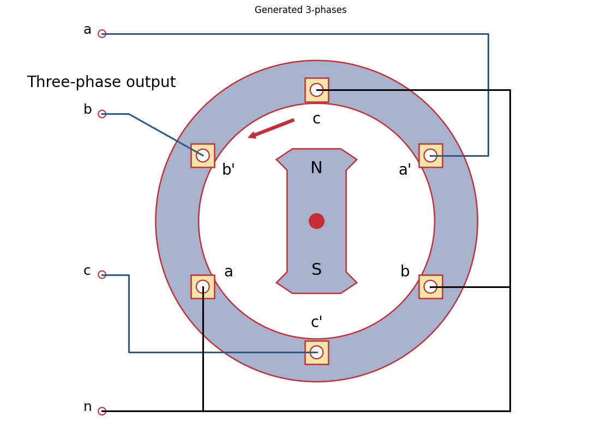
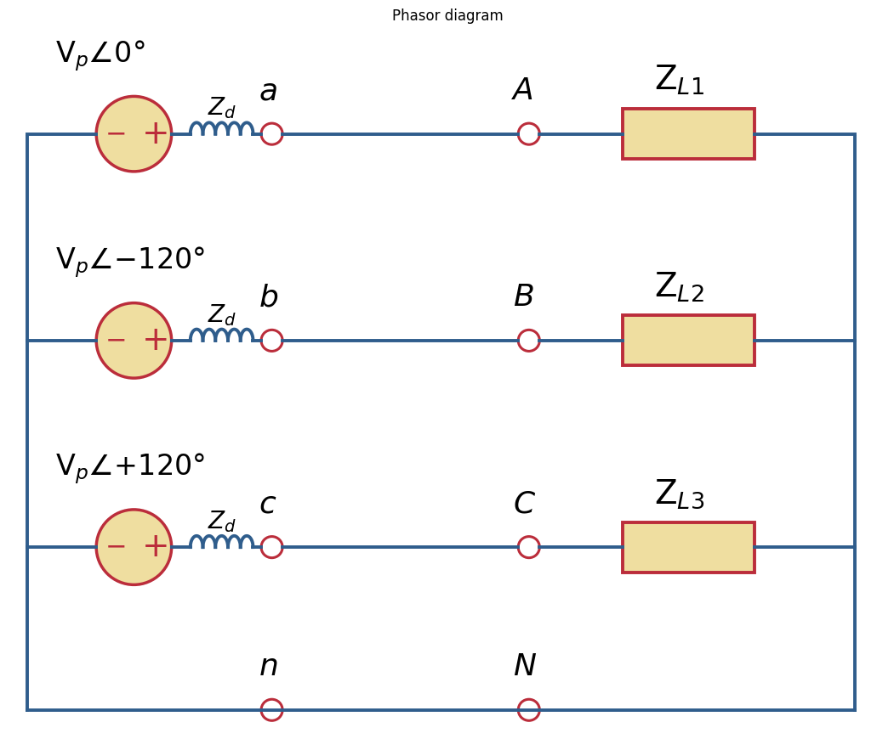
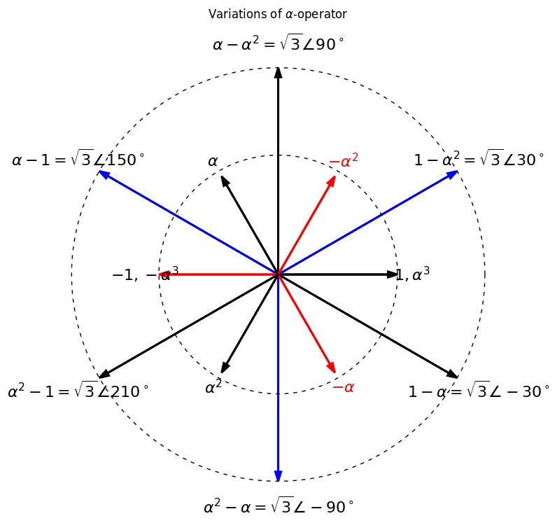
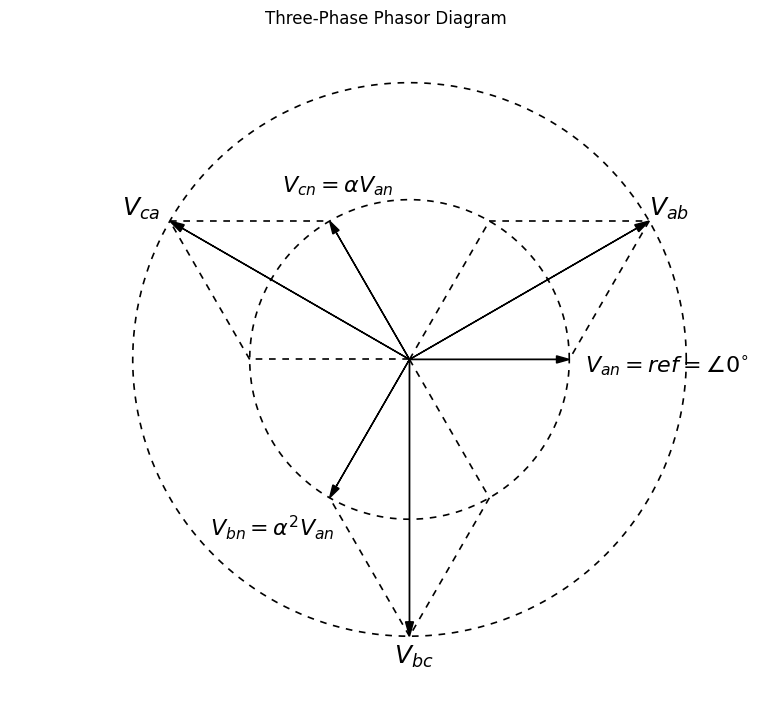
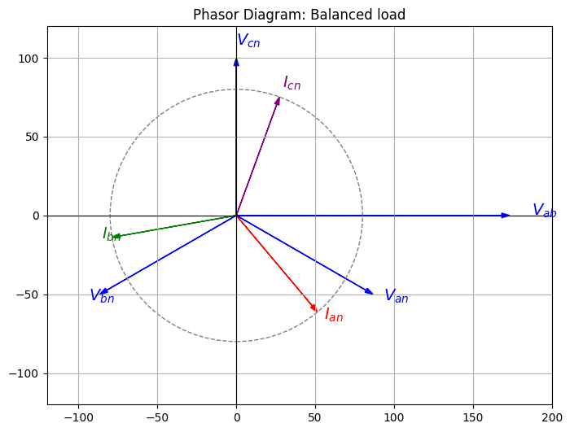

Polyphase systems#
Three-phase power became dominant because it achieves nearly all of the benefits of a multiphase system while keeping wiring, generators, transformers, motors, and transmission networks relatively simple and economical. Higher phase counts offer only incremental improvements for substantially greater complexity.
The 3-phases are displaced 120 degrees apart, and theire vectorial sum is zero:
An eleoctromotive force (emf) is produced by a rotor rotating in a magnetic field.


\(\alpha\)-operator#
Operator |
Rectangular Form |
Polar Form |
Angle |
|---|---|---|---|
\(1=\alpha^0\) |
\(1+j0\) |
\(1\angle0^\circ\) |
\(0^\circ\) |
\(\alpha\) |
\(-\frac12+j\frac{\sqrt3}{2}\) |
\(1\angle120^\circ\) |
\(120^\circ\) |
\(\alpha^2\) |
\(-\frac12-j\frac{\sqrt3}{2}\) |
\(1\angle240^\circ\) |
\(-120^\circ\) |
\(\alpha^3\) |
\(1\) |
\(1\angle360^\circ\) |
\(0^\circ\) |
\(\alpha^4\) |
\(\alpha\) |
\(1\angle120^\circ\) |
\(120^\circ\) |
\(\alpha^5\) |
\(\alpha^2\) |
\(1\angle240^\circ\) |
\(-120^\circ\) |
Fundamental identities#
Identity |
Result |
|---|---|
\(\alpha^3\) |
\(1\) |
\(\alpha^{-1}\) |
\(\alpha^2\) |
\(\alpha^{-2}\) |
\(\alpha\) |
\(1+\alpha+\alpha^2\) |
\(0\) |
\(\alpha\alpha^2\) |
\(1\) |
\(\alpha+\alpha^2\) |
\(-1\) |

Line - to - line voltage operators#
Expression |
Simplified Form |
Polar Form |
|---|---|---|
\(1-\alpha\) |
\(\sqrt3\,\angle(-30^\circ)\) |
\(\sqrt3 e^{-j30^\circ}\) |
\(1-\alpha^2\) |
\(\sqrt3\,\angle(30^\circ)\) |
\(\sqrt3 e^{j30^\circ}\) |
\(\alpha-\alpha^2\) |
\(\sqrt3\,\angle(90^\circ)\) |
\(\sqrt3 e^{j90^\circ}\) |
\(\alpha-1\) |
\(\sqrt3\,\angle(150^\circ)\) |
\(\sqrt3 e^{j150^\circ}\) |
\(\alpha^2-1\) |
\(\sqrt3\,\angle(-150^\circ)\) |
\(\sqrt3 e^{-j150^\circ}\) |
\(\alpha^2-\alpha\) |
\(\sqrt3\,\angle(-90^\circ)\) |
\(\sqrt3 e^{-j90^\circ}\) |

EXAMPLE 2.3#
In a balanced three-phase circuit, the voltage Vab is \(173.2\angle 0^{\circ}\) V. Determine all the voltages and the currents in a Y-connected load having \(Z_L= 10\angle 20^{\circ}\Omega\). Assume that the phase sequence is abc.
Balanced Three-Phase Y-Connected Load Solution
Given: Vab = 173.2∠0° V ZL = 10∠20° Ω Phase sequence = abc
Phase Voltages: Van = 100∠-30° V Vbn = 100∠-150° V Vcn = 100∠90° V
Line Voltages: Vab = 173.2∠0° V Vbc = 173.2∠-120° V Vca = 173.2∠120° V
Phase/Line Currents: Ia = Ian = 10∠-50° A Ib = Ibn = 10∠-170° A Ic = Icn = 10∠70° A
Python Script:
Phase Voltages:
Van = 100.00 ∠ -30.00° V
Vbn = 100.00 ∠ -150.00° V
Vcn = 100.00 ∠ 90.00° V
Line Voltages:
Vab = 173.20 ∠ 0.00° V
Vbc = 173.20 ∠ -120.00° V
Vca = 173.20 ∠ 120.00° V
Line/Phase Currents:
Ian = 10.00 ∠ -50.00° A
Ibn = 10.00 ∠ -170.00° A
Icn = 10.00 ∠ 70.00° A

Control#
Checking the sum of balanced systems
print('Sum of line-to-neutral voltages',np.round(Van + Vbn + Vcn))
print('Sum of line-to-line voltages',np.round(Vab + Vbc + Vca))
print('Sum of line currents',np.round(Ian + Ibn + Icn))
Sum of line-to-neutral voltages 0j
Sum of line-to-line voltages 0j
Sum of line currents 0j